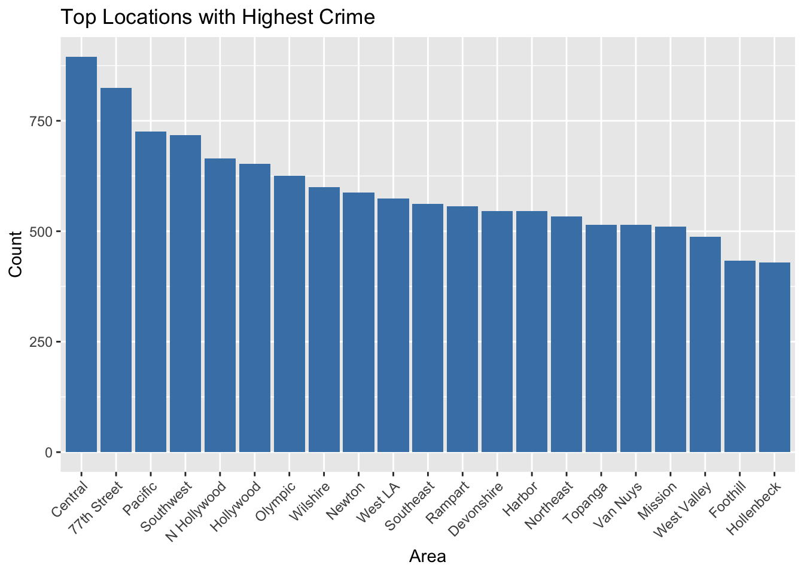
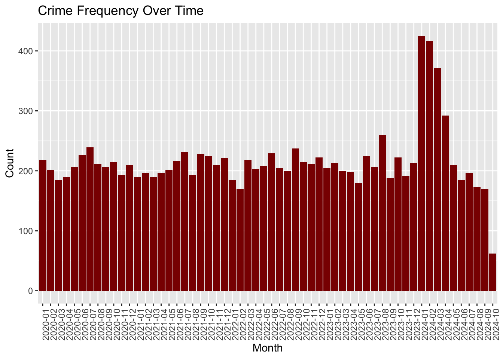
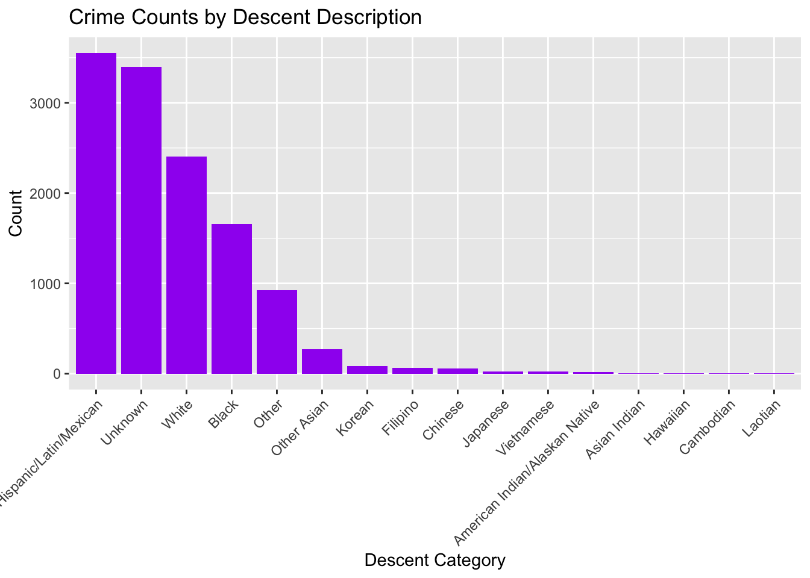
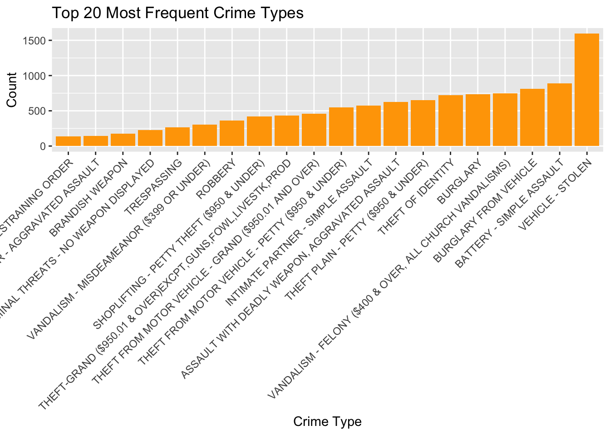
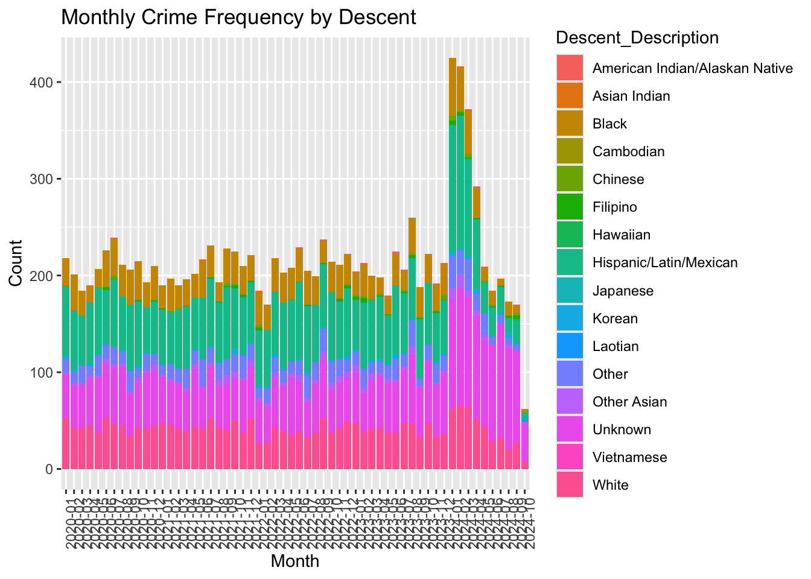
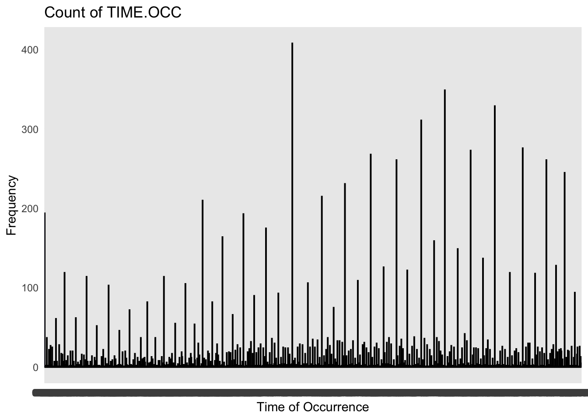
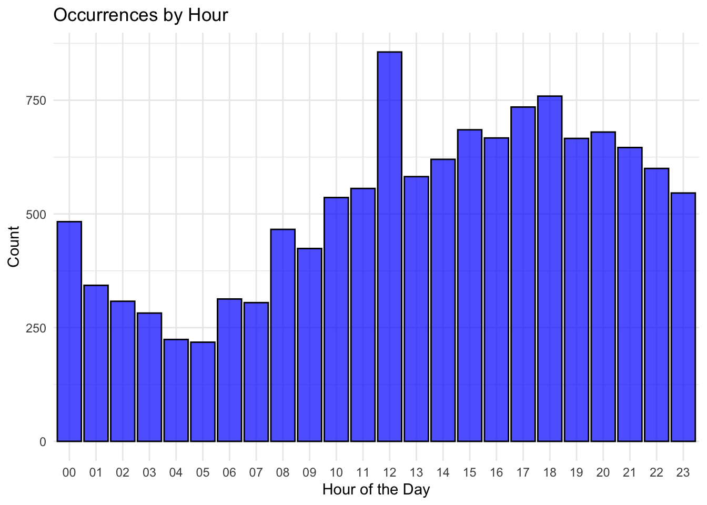
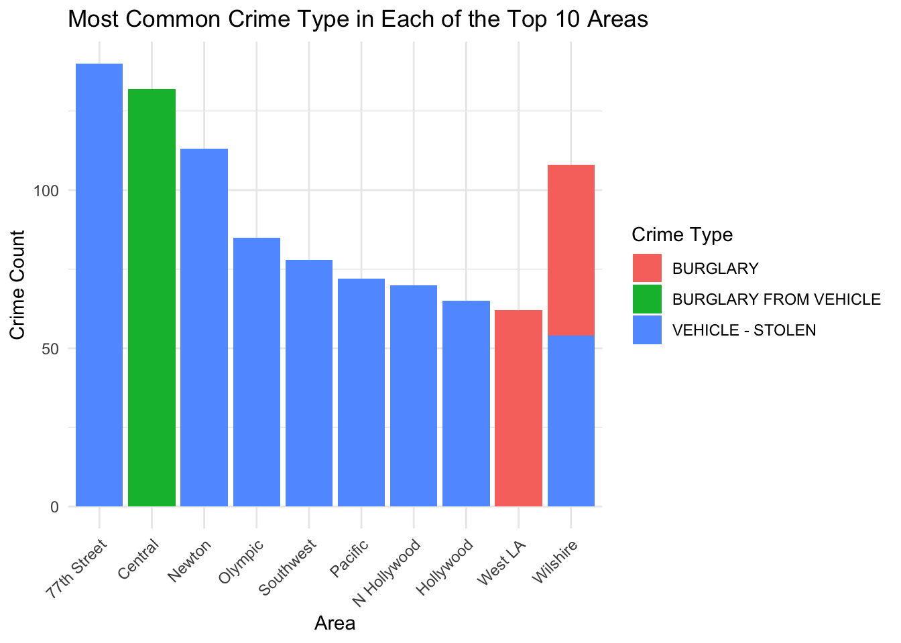
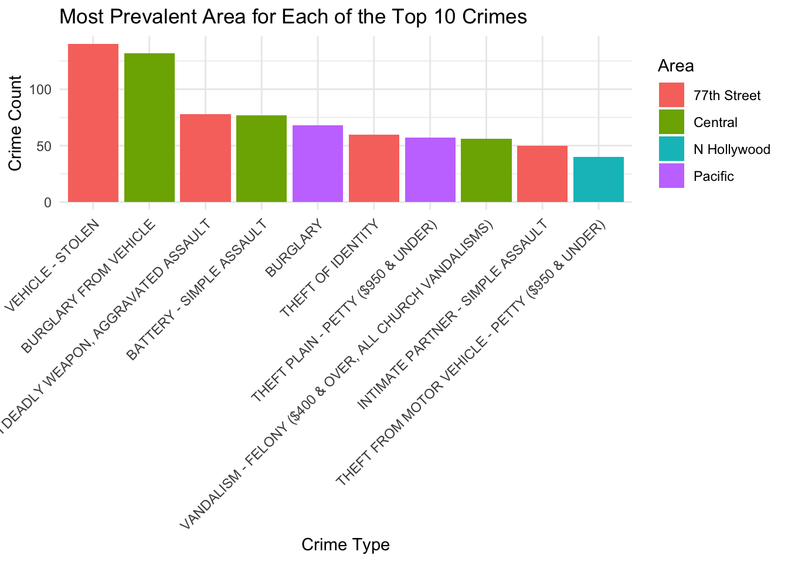

The following code blocks can be found in the scripts file under Sean test scripts for a complete R file for testing. This will be higher level descriptions.
The following objects are masked from 'package:stats':
filter, lag
The following objects are masked from 'package:base':
intersect, setdiff, setequal, union
library(ggplot2)library(here)
here() starts at /Users/zzzhao/Desktop/MA415/ma-4615-fa24-final-project-group-4
2. Clean Dataset for Readability and Ease of Use
data <-readRDS(here("filtered_data_copy.rds"))# Create a tibble with the mapping of descent codesdescent_codes <-tribble(~Descent_Code, ~Descent_Description,"A", "Other Asian","B", "Black","C", "Chinese","D", "Cambodian","F", "Filipino","G", "Guamanian","H", "Hispanic/Latin/Mexican","I", "American Indian/Alaskan Native","J", "Japanese","K", "Korean","L", "Laotian","O", "Other","P", "Pacific Islander","S", "Samoan","U", "Hawaiian","V", "Vietnamese","W", "White","X", "Unknown","Z", "Asian Indian")# Join the tibble with the main dataset by Vict.Descentdata_clean <- data %>%left_join(descent_codes, by =c("Vict.Descent"="Descent_Code"))# Replace unmatched or missing descriptions with "Unknown"data_clean$Descent_Description[is.na(data_clean$Descent_Description)] <-"Unknown"# Drop irrelevant columns with many NAsdata_clean <- data_clean[, !(names(data_clean) %in%c("Crm.Cd.2", "Crm.Cd.3", "Crm.Cd.4", "Weapon.Used.Cd", "Weapon.Desc", "Cross.Street"))]data_clean$DATE.OCC <-as.POSIXct(data_clean$DATE.OCC, format ="%m/%d/%Y %I:%M:%S %p")# Extract the 'month' column in "YYYY-MM" formatdata_clean$month <-format(data_clean$DATE.OCC, "%Y-%m")# Check the cleaned datanrow(data_clean)
This was done in an effort to make the data more readable and cleaner. It gets rid of columns that had a lot of N/A’s in the column and changes the date column to remove the 12:00 AM that was previously there and replacing it with a “DATE OCC” column that was not initially there to make the data easier to change.
It also creates another column that takes the Vict.Descent column and uses the codes from a tibble to create another column called “Descent_Code” in order to get a more readable information. Then, I checked the data.
3. Data Visualization
3.1 Top Locations with Crime
ggplot(data_clean, aes(x =reorder(AREA.NAME, AREA.NAME, function(x) -length(x)))) +geom_bar(fill ="steelblue") +theme(axis.text.x =element_text(angle =45, hjust =1)) +labs(title ="Top Locations with Highest Crime", x ="Area", y ="Count")

This depicts the locations for the places with the highest crime count. We previously did this last week but I wasn’t sure what the graph produced was so I recreated it. Same data as last week but a better visualization. Personally, nothing to note here, it seems like crime is distributd pretty evenly throughout the ditricts. Can be something to be mentioned in the final project.
3.2 Crime Frequency Over Time
ggplot(data_clean, aes(x = month)) +geom_bar(fill ="darkred") +theme(axis.text.x =element_text(angle =90, hjust =1)) +labs(title ="Crime Frequency Over Time", x ="Month", y ="Count")

This is a bit hard to read but I did find it interesting that there was a spike in crime in 2024 January-February. May look into further for potential findings on why that was. Otherwise, crime seems decently evenly distributed by time.
3.3 Crime Counts by Descent Description
ggplot(data_clean, aes(x =reorder(Descent_Description, Descent_Description, function(x) -length(x)))) +geom_bar(fill ="purple") +theme(axis.text.x =element_text(angle =45, hjust =1)) +labs(title ="Crime Counts by Descent Description", x ="Descent Category", y ="Count")

Interesting that Hispanics represent the largest amount of crime counts by description. Even more interesting, is that Whites are second given different American stereotypes. May look into doing a correlation chart on this.
3.4 Top 20 Most Frequent Crime Types
# Calculate the frequency of each crime typetop_crime_types <- data_clean %>%count(Crm.Cd.Desc, sort =TRUE) %>%top_n(20, n)ggplot(top_crime_types, aes(x =reorder(Crm.Cd.Desc, n), y = n)) +geom_bar(stat ="identity", fill ="orange") +theme(axis.text.x =element_text(angle =45, hjust =1)) +labs(title ="Top 20 Most Frequent Crime Types", x ="Crime Type", y ="Count")

Initially looked at all types of crime but this was too large a list so it was condensed down to the above chart with the top 20 most frequent. May look into condensing some of these categories such as burglary and robbery and look into the difference between those two crimes to see if they can be condensed. I really want to treat the $950 above and below as the same category. Still, it is interesting to see that a lot of people are still willing to commit felonies after the revision of the burglary codes. The difference between the $950 over and under is not too much.
3.5 Monthly Crime Frequency by Descent
ggplot(data_clean, aes(x = month, fill = Descent_Description)) +geom_bar(position ="stack") +theme(axis.text.x =element_text(angle =90, hjust =1)) +labs(title ="Monthly Crime Frequency by Descent", x ="Month", y ="Count")

This is a confusing chart but an interesting visualization. Could be used if it considered most frequent to least frequent but we will see if we can incorporate this somehow.
4. Next Steps
May look into saving the cleaned data as a seperate rds file depending on groupmate feedback. We will see. I will sleep on it.
Need to look at more charts like the places description to see if there are any indicators there. Also need to take a look at the time description to see which hours people are committing crime. I’m not doing anymore though at least not this week.
Lastly, look into formulating an idea for the direction of the project and any potential uses of the “lm()” function.
##5. Charts about places and time that committing crime
library(tidyverse)
── Attaching core tidyverse packages ──────────────────────── tidyverse 2.0.0 ──
✔ forcats 1.0.0 ✔ readr 2.1.5
✔ lubridate 1.9.3 ✔ stringr 1.5.1
✔ purrr 1.0.2 ✔ tidyr 1.3.1
── Conflicts ────────────────────────────────────────── tidyverse_conflicts() ──
✖ dplyr::filter() masks stats::filter()
✖ dplyr::lag() masks stats::lag()
ℹ Use the conflicted package (<http://conflicted.r-lib.org/>) to force all conflicts to become errors
We transform the type of TIME.OCC to become HH:MM instead of numerical. It’s easier for us to read because some of the time like 00:01 will be handle as 1 in the previous TIME.OCC column. We plus in the time in graph to see when would have the most case occurs.
ggplot(df, aes(x = TIME.OCC)) +geom_bar(stat ="count", fill ="blue", color ="black", alpha =0.7) +labs(title ="Count of TIME.OCC", x ="Time of Occurrence", y ="Frequency") +theme_minimal()

We can’t see a lot of pattern because the graph is not sorted as hourly. We will take out HH from HH:MM and find the count of case to see in what hour in a day would have most case occurs.
hourly_counts <- df %>%group_by(Hour) %>%summarise(Count =n())ggplot(hourly_counts, aes(x = Hour, y = Count)) +geom_bar(stat ="identity", fill ="blue", color ="black", alpha =0.7) +labs(title ="Occurrences by Hour", x ="Hour of the Day", y ="Count") +theme_minimal()

The answer is actually suprising because people thinks that mid night would be the time that will have most case. But it seems that noon time is would be the one that have the most case. It may be the reason that people may not realize and call the police after they wake up in the morning.
This is the most updated version.
6. Analyze the relationship between top crimes and specific areas.
##6.1 analyze the highest crime in each of the top 10 areas.
# Calculate total crime count by area and select top 10 areasdata <-readRDS(here("filtered_data_copy.rds"))crime_area_summary <- data %>%group_by(AREA.NAME, Crm.Cd.Desc) %>%summarise(Crime_Count =n())
`summarise()` has grouped output by 'AREA.NAME'. You can override using the
`.groups` argument.
# Filter for top 10 areastop_10_area_crimes <- crime_area_summary %>%filter(AREA.NAME %in% top_10_areas)# Find the most common crime type in each top areahighest_crime_per_area <- top_10_area_crimes %>%group_by(AREA.NAME) %>%filter(Crime_Count ==max(Crime_Count)) %>%select(AREA.NAME, Crm.Cd.Desc, Crime_Count) %>%arrange(desc(Crime_Count))
# plot showing the highest crime in each of the top 10 areasggplot(highest_crime_per_area, aes(x =reorder(AREA.NAME, -Crime_Count), y = Crime_Count, fill = Crm.Cd.Desc)) +geom_bar(stat ="identity") +labs(title ="Most Common Crime Type in Each of the Top 10 Areas",x ="Area",y ="Crime Count",fill ="Crime Type") +theme_minimal() +theme(axis.text.x =element_text(angle =45, hjust =1))

This helps identifying which crime types are dominant in high-crime areas, which could be usedful for targeted policy-making. it is worthy noticing that vehicle stolen us a widespread issue across several high crime areas. burglary is the top crime in wilshire, showing a unique pattern of property crimes in that area compared to the others.
##6.2 analyze which area is the most prevalent for each of the top 10 crimes
# Identify the top 10 most frequent crime typestop_10_crimes <- data_clean %>%count(Crm.Cd.Desc, sort =TRUE) %>%top_n(10, n) %>%pull(Crm.Cd.Desc)
# Filter for the top 10 crimestop_10_crime_areas <- crime_area_summary %>%filter(Crm.Cd.Desc %in% top_10_crimes)# Find the most prevalent area for each top crimemost_prevalent_area_per_crime <- top_10_crime_areas %>%group_by(Crm.Cd.Desc) %>%filter(Crime_Count ==max(Crime_Count)) %>%select(Crm.Cd.Desc, AREA.NAME, Crime_Count) %>%arrange(desc(Crime_Count))
# plot showing the most prevalent area for each of the top 10 crimesggplot(most_prevalent_area_per_crime, aes(x =reorder(Crm.Cd.Desc, -Crime_Count), y = Crime_Count, fill = AREA.NAME)) +geom_bar(stat ="identity") +labs(title ="Most Prevalent Area for Each of the Top 10 Crimes",x ="Crime Type",y ="Crime Count",fill ="Area") +theme_minimal() +theme(axis.text.x =element_text(angle =45, hjust =1))

vehicle stolen and burglary from vehicle are particulary prevalent in 77th street and central. assault with deadly weapon, aggravated assault and battery simple assault also occur very frequently in 77th street. theft of identity is most prevalent in N Hollywood, which shows a different crime pattern in this area
combining with these two charts together, vehicle theft and burglary from vehicles dominate as the most frequent crime types in multiple areas, especially in 77th street and central. the central area has a high incidence of various crimes, which may indicating that the central area faces broader challenges.